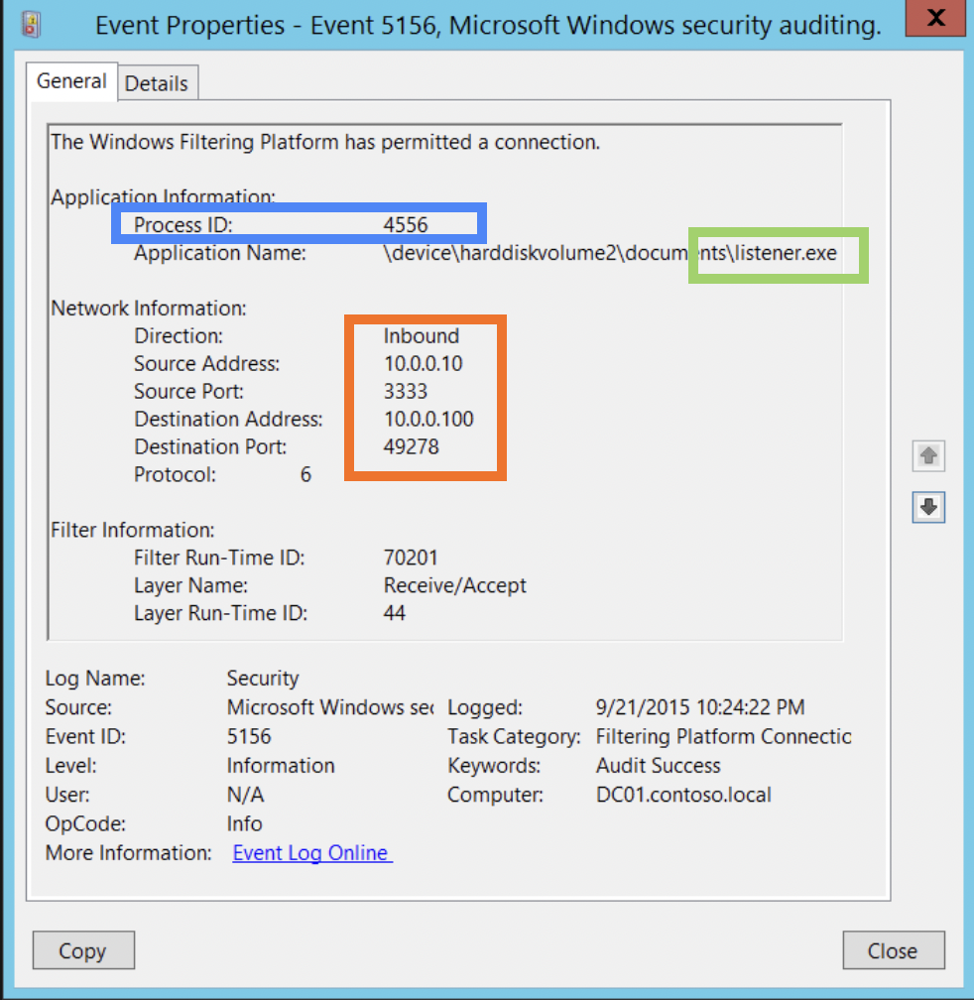

Network Devices Logs
Collection
Most of the devices keep some sort of logs. As for the network related issues these are switches, routers, firewalls, IDS and IPS, web proxies, DC and authentication servers, DCHP server and application servers.
SIEMs are log aggregators. When configues correctly all logs and events from all systems in the enterprise flows to a cetralized repository where it can then be analysed. Sometimes these SIEM analyse what’s normal and what’s not. However, they are quite costy 💰.
There are several ways to capture the network traffic between machines.
Network tap - a device that’s place between other two or more devices on the network. I presume, hub can be considered a tap.
SPAN port is another option.
Packet sniffer (tcpdump or Wireshark 🦈) installed on the host.
Legal Considerations for log acquisition:
- There should be a logging policy and users should be well aware of it, what’s being logged. Mind the privacy issues.
- Logs should be close to the event, otherwise they migth be rejected in court.
- There should be people, who know what devices keep what logs, what structure do they have. These people should also test the software from time to time to make sure the logs are reliable. They might be asked to testify in court.
- It’s also preferrable that the logs structure is consistent across the enterprise.
- Prolonged failures of logging should be documented and the reason determined as well.
- Keep in mind that in case a legal prosecution, these logs will be available to the opposing counsel.
- The backups and copies should be kept until the court states that they are no longer needed. For some standards there might be determined periods for keeping the logs. For example, in case of PCI-DSS it’s 1 year.
Logs and pcap files acquired should be documented thoroughly to be admissable. Collect the evidence, send them to a USB drive immediately and then get the hash for each file. Then, for each log and pcap keep the following entry:
- File name
- Description
- Location
- Date and time (mind the timezone)
- Collected by
- MD5 or SHA hash
[1] Digital forensics and Incident Response, G. Johansen
Analysis
Server Logs
Browser Activity
Collection
Many browsers are based on Chromium engine, that’s why they will have similar artifacts: Chrome, Opera, new Edge, Brave, Vivaldi. Also, there are lots of Electron applications that share some artifacts with them. Chrome is the point of convergence for all these application. On Magnet Summit it was suggested to explore and learn Chrome and it’s artifacts as well as OS common artifacts due to its popularity and reusing some of its components. Electron is a framework that is available for building applications, cross-platform. You’re creating a web-application that can be used as a desktop one (implementing both back- and frontend). Backend - node.js, and frontend - Chrome. So, a lot of artifacts can be shared with Chrome and buddies. It’s in wide use. For example, ⚠️ WhatsApp and Skype use it.
On Windows hiberfil.sys, pagefile.sys and swapfile.sys can also be used to retrieve this evidence from “RAM-on-disk”. Belkasoft EC can parse these files for browser artifacts.
Firefox
🛠 Tools: Web Historian (dat, cookies and tmp), Firefox Forensics (cookies, download list and history), NetAnalysis 💰 (history), CacheBack (cookies and history), Encase 💰 (cookies, history and bookmarks), FTK 💰(cookies, history and bookmarks), Autopsy (cookies, history and bookmarks).
Most information is stored here: C:\Documents and Settings\%Username%\Application Data\Mozilla\Firefox (Windows XP), C:\Users\%Username%\AppData\Roaming\Mozilla\Forefox\Profiles\%Profile%.default (Windows Vista+), /Library/Application Support/Firefox/Profiles (macOS), .mozilla/firefox/ for Linux. Use any SQLite DB Viewer to examine *.default files or any forensic platform. These profiles contain user activity such as searches, bookmarks, tabs etc.
| artifact | Information |
|---|---|
Localstore.rdf |
No real value for the examiner here, since it contains customized data on the interface. Can be cleared in the GUI with “Reset toolbars and controls” option. [1] |
addons.json |
I think, the file name speaks for itself. It contains all the data for installed addons. |
Chrome
Most information is stored here: C:\Documents and Settings\%Username%\Local Setting\Application Data\Google\Chrome (Windows XP), C:\Users\%Username%\AppData\Local\Google\Chrome. On Windows machine leveldb is stored here: C:\%Username%\AppData\Local\Google\Chrome\User Data\Default\IndexedDB. Contains multiple folders, one for each domain. Usually have the extension leveldb. The LevelDB store for a particular domain will be found in the IndexedDB folder with a name in the form: [host with concurrent separators replaced an underscore]_[dbid].indexeddb.leveldb. IndexedDB is just an API to use, while LevelDB is the artefact that’s creted when this API is used.
Tools ⚒️: Magnet AXIOM 💰, Chrome Analyser (cookies, history, download list, bookmarks), NetAnalysis 💰 (history), CacheBack (cookies and history), Autopsy (cookies, history and bookmarks).
Edge
Tools 🛠: Belkasoft Evidence Center 💰
IE
C:\Documents and Settings\%username%\Local Settings\Temporary Internet Files\Content.IE5, C:\Documents and Settings\%username%\Local Settings\History\History.IE5, C:\Documents and Settings\%username%\Cookies for Windows 2000.
Since Windows 7 C:\Users\%username%\AppData\Local\Microsoft\Windows\Temporary Internet Files\Content.IE5. However, IE plugins can’t access it and OS created virtual folders for cached data unaccessible to general user. Cookies: C:\Users\%username%\AppData\Roaming\Microsoft\Windows\Cookies and C:\Users\%username%\AppData\Roaming\Microsoft\Windows\Cookies\Low for low-privileged access if protected mode is enabled.
There is also some data in registry for this browser: HKEY_USERS\.Default\Software\Microsoft\Internet Explorer\TYPEDURLs and HKEY_CURRENT_USER\Software\Microsoft\Internet Explorer\TYPEDURLs contains search terms. If autocomplete was used, the final search term will be recorded.
Tools 🛠. There is a huge amount of sowtware capable of parsing and collecting this information. Probably all of the forensic platforms can do it. At least, Autopsy and Magnet can. Also, free NirSoft software for web browser history parsing is available. Also, Web Historian can be used. Pasco (dat), Web Historian (dat, cookies, temp), Magnet AXIOM 💰, Index.dat Analyser (dat), NetAnalysis 💰 (history), CacheBack (cookies and history), Encase💰 (cookies, history and bookmarks), FTK💰 (cookies, history and bookmarks), Autopsy (cookies, history and bookmarks).
Opera
Tools 🛠: Magnet AXIOM 💰❓, NetAnalysis 💰 (history), CacheBack (cookies and history), Encase💰 (cookies, history and bookmarks), FTK💰 (cookies, history and bookmarks), Autopsy (cookies, history and bookmarks)❓.
Analysis
Analysis
Ports idetify services (usually, but not always).
- System ports are forensically important
0-1023. - User ports
1024-49151 - Private
49152-last
Cheatsheets for known ports here.
Private IP addresses:
- 10.0.0.0 - 10.55.55.55
- 17x.0.0.0
- 19x.0.0.0
Make a list of notable ports and IP addresses. Look for open connections.
netstat -boan statistics and current tcp connections along with the exe, listening port and PID. For Mac OS netstat there is no -o switch, so I’ve used netstat -ban.
Filter out internal addresses (they are not interesting initially). Check the remote connections. Check executables that launched these connections, also look for port-services mismatch or unusual ports or services.
📝 Make a list of processes and connections of several clean systems for “known-good” reference.
Example of suspicious case: java listening on port 53 which is normally used by DNS service. FF using 3389 port (which is for remote connections). 44999 (used for private internal connections) some strange executable.
Windows Security Event Log 5156 is triggered when a network connection is allowed. 4688 - new process starting.
write-EventLog -eventID 5156 -EntryType FailureAudit -message "hello"
>Log Application
>Source Application
auditpol /set /subcategory:”Filtering Platform Connection” /success:disable /failure:enable

5158 5154 ->
5158 -> 5031 binding started and terminated by fw.
PID, Application field (path to the executable and exe name), Inbound/Outboun, sport/dport, addresses (src and dst), protocol field.
If you don’t see some event ids that you are supposed to, then try turning on all auditin policy using secpol.msc or going to Start -> Windows Administrative Tools -> Local Security Policy. In the opened window then go to Local Policies and choose Audit Policy. Either turn on each of them or turn on the ones that you think are responsible I was able to star capturing event 5156. I was using Vbox with Windows Server 2019 installed and the machine promoted to DC (Active Directory Feauture installed).
Frequency analysis.
Block event codes.
Filter the record to indentify external IP addresses with which the PC is commincating. Then check external IPs reputations for suspicious using, for example, hostintel.
To use hostintel, install it following the instructions on GitHub. Then install geoip2 using pip install "geoip2==3.0.0" . I got an error that geoip.database was not installed when I installed it with pip install geoip2 or from GitHub. This module is for working with GeoIP databases.
To actually use these databases (one is included with the tool, but it mught get outdated), signup here and download GeoLite2 City from here. This is an archive, unpack it and put the *.mmb file in hostintel/data folder (replace). These dbs are used by other tools as well, so you might want to keep it elsewhere and change its path in config.
Also, about the config. Edit this config - hostintel/sampleconfig.conf. By default, only GeoLite2 City is used, but you can add your free public API keys from different threat intelligence resources like VirusTotal, Censys, OTX, Passive Total or/and Shodan. You might want to rename it more appropriately, like config.conf or aliens-are-among-us.conf 👽. But keep in mind the name of the config, whatever it is, to run the tool.
For running the tool, you’ll also need to create a file with a list of IPs. I’ve created a file i.txt in the hostintel directory and so my command was:
python hostintel.py config.conf i.txt
How frequently is the host connecting to another machine? For how long? May be it is something legitimate. But if it’s recent or/and not regular - might be an indicator.
Look for unusual application names of paths, typos or pokerhand ports (44488 12345 or alike). Or may some gibberish names. Unusual protocols - 1 (ICMP) 6 (TCP) 70 (UDP). Look for the ports outside of these three.
Todo
💡 For each common nmap scan get the footrprint
💡 For each common DoS attack get the footprint
💡 Footprint for sqlmap
💡Footprint for common vulnerability scanners
🗒 [1] DFSP # 250 – Network Triage Part 1, 2, 3, 4.
🗒 [2] SANS DFIR Webcast - Incident Response Event Log Analysis